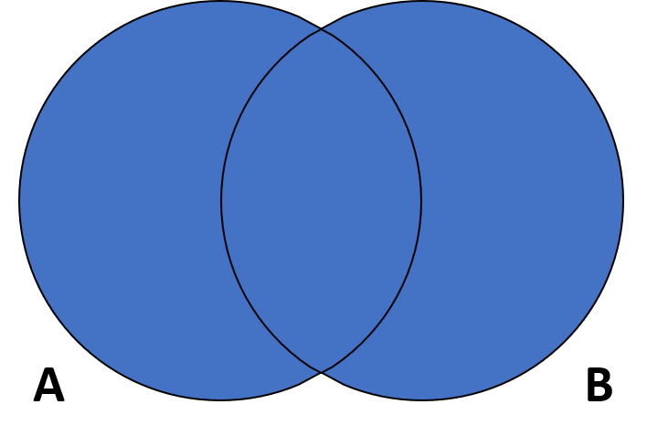
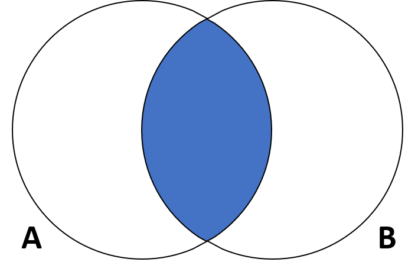
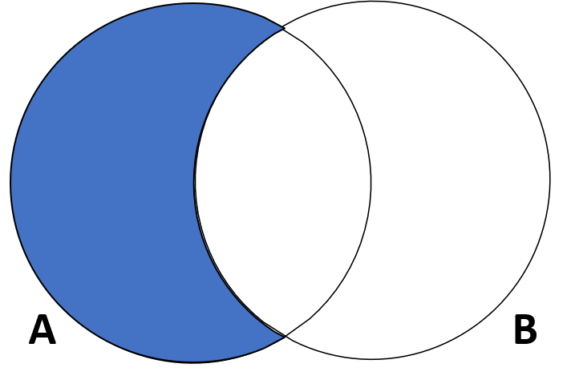
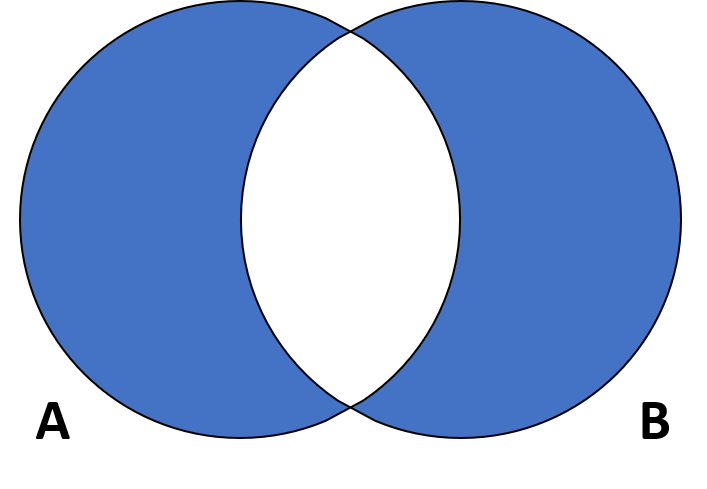

Introduction:
Set theory serves as a foundation for many fields of mathematics and data analysis. Understanding sets and their operations is critical for a wide range of scientific and computational applications. In this post, we will define the essential set operations in abstract terms: union, intersection, difference, symmetric difference, subset, and complement. We’ll describe each operation using standard notation and basic examples (mathematical notation for precision). Venn diagrams are a valuable visual tool throughout, demonstrating how various operations combine or relate sets. By the end, you should have a good idea of what each operation represents. (In Part II, we will look at how these abstract procedures may be applied to real biological data; a hint is provided at the conclusion!)
Union

The union of two sets \(A\) and \(B\) (denoted \(A \cup B\)) is the set containing all elements that are in either \(A\) or \(B\) (or both). In set‐builder notation:
\[ A \cup B = \{\,x \mid x \in A \text{ or } x \in B\}. \]
In this case, the term “or” is inclusive, which means that \(x\) can belong to either \(A\) or \(B\), or both. For example, if
\[ A = \{1,2,3\} \quad\text{and}\quad B = \{3,4\}, \]
then
\[ A \cup B = \{1,2,3,4\}, \]
(the number \(3\) exists in both, but in the union it is listed once as every distinct element is included). The union operation is analogous to logical OR in that an element is in \(A \cup B\) if it is in at least one of the sets. Union is also commutative and associative, thus
\[ A \cup B = B \cup A, \]
and
\[ A \cup (B \cup C) = (A \cup B) \cup C. \]
In practice, the union joins two sets into a single larger set that has all of their unique components.
Intersection

The intersection of sets \(A\) and \(B\) (denoted \(A \cap B\)) is the set of all elements that belong to both \(A\) and \(B\). Using set‐builder notation:
\[ A \cap B = \{\,x \mid x \in A \text{ and } x \in B\}. \]
Only elements from both sets appear in the intersection. For example, if
\[ A = \{1,2,3\} \quad\text{and}\quad B = \{3,4,5\}, \]
then
\[ A \cap B = \{3\}, \]
since \(3\) is the single element contained in both sets. If the two sets have no elements in common, the intersection is the empty set, \(\varnothing\). (We then term the sets disjoint.) Intersection, like union, is commutative and associative. For example,
\[ A \cap B = B \cap A. \]
Importantly, any intersection \(A \cap B\) will always be a subset of each set \(A\) and \(B\), capturing exactly what the two sets share.
Difference (Relative Complement)

The difference between two sets \(A\) and \(B\), denoted as \(A - B\) (or \(A \setminus B\)), consists of all elements in \(A\) but not in \(B\). Formally:
\[ A - B = \{\,x \mid x \in A \text{ and } x \notin B\}. \]
In other words, we “subtract” set \(B\) from \(A\), removing all elements that \(A\) and \(B\) share. For example, if
\[ A = \{a,b,c,d\} \quad\text{and}\quad B = \{b,d,f\}, \]
then
\[ A - B = \{a,c\}, \]
since we eliminate \(b\) and \(d\) because they also belong to \(B\).
It is important to note that set difference is not commutative. That is, \(A - B\) does not generally equal \(B - A\). In our example,
\[ B - A = \{f\}, \]
which is not the same as \(A - B\). The difference operation is also known as the relative complement of \(B\) in \(A\), since it yields all elements of \(A\) that are not in \(B\).
- If \(B\) and \(A\) have no overlap, then \(A - B = A\) (nothing is removed).
- If \(B\) contains all elements of \(A\), then \(A - B = \varnothing\).
Symmetric Difference

The symmetric difference between sets \(A\) and \(B\) (denoted \(A\triangle B\), or occasionally \(A\oplus B\)) is the set of elements that are in exactly one of the two sets, but not in both. You can characterize it in two equivalent ways:
Using difference:
\[ A\triangle B = (A \setminus B)\,\cup\,(B \setminus A). \]Using union and intersection:
\[ A\triangle B = (A \cup B)\,\setminus\,(A \cap B). \]
For example, if
\[
A = \{1,2,3,4\}
\quad\text{and}\quad
B = \{3,4,5\},
\]
then
- \(A \setminus B = \{1,2\}\),
- \(B \setminus A = \{5\}\),
so
\[
A\triangle B = \{1,2,5\}.
\]
Symmetric difference corresponds to the logical “exclusive or” (XOR):
\[
x \in A\triangle B \quad\iff\quad (x\in A)\oplus(x\in B).
\]
It is commutative and associative, for instance
\[ A\triangle B = B\triangle A, \qquad A\triangle (B\triangle C) = (A\triangle B)\triangle C. \]
In summary, \(A\triangle B\) yields precisely those elements that belong to one set or the other, but not to their intersection.
Subset and Superset
A subset describes the relationship between two sets rather than creating a new one. Set \(A\) is a subset of set \(B\) (written \(A \subseteq B\)) if every element of \(A\) is also in \(B\). In logical form:
\[ A \subseteq B \quad\Longleftrightarrow\quad \forall x,\; (x \in A \implies x \in B). \]
For example, if
\[ A = \{\mathtt{dog},\;\mathtt{cat}\} \quad\text{and}\quad B = \{\mathtt{dog},\;\mathtt{cat},\;\mathtt{elephant}\}, \]
then \(A \subseteq B\) because all members of \(A\) (dog and cat) are contained in \(B\). A Venn diagram typically shows this by drawing the circle for \(A\) entirely inside the circle for \(B\). Every set is a subset of itself, so \(A \subseteq A\) always holds. If \(A \subseteq B\) but \(A \neq B\), we call \(A\) a proper subset of \(B\), written \(A \subset B\), indicating that \(B\) has at least one element not in \(A\). Dually, \(B\) is a superset of \(A\) (written \(B \supseteq A\)) whenever \(A \subseteq B\).
It’s worth noting how subset relations affect union and intersection. If \(A \subseteq B\), then
\[ A \cup B = B, \qquad A \cap B = A, \]
since adding a smaller set to a larger one brings nothing new, and their overlap is exactly the smaller set. These identities follow directly from the definitions of union and intersection.
Complement
In set theory, a complement is defined as all elements that are not part of a set, relative to a universal set \(U\), which represents the complete collection under consideration. The complement of \(A\) (denoted \(A^c\), also written \(A'\) or \(\overline{A}\)) is the set of all elements in \(U\) that are not in \(A\). In formula terms:
\[ A^c = U - A \;=\; \{\,x \mid x \in U \text{ and } x \notin A\}. \]
Simply put, \(A^c\) is the “opposite” of \(A\) within the universe \(U\), containing everything \(A\) does not. For example, if
\[ U = \{1,2,3,4,5,6,7\} \quad\text{and}\quad A = \{3,4,5\}, \]
then
\[ A^c = \{1,2,6,7\}, \]
which are exactly the elements of \(U\) not in \(A\).
Complements share several fundamental properties:
Partition of the universe:
\[ A \cup A^c = U, \qquad A \cap A^c = \varnothing. \]Double complement:
\[ (A^c)^c = A. \]De Morgan’s laws:
\[ (A \cup B)^c = A^c \cap B^c, \qquad (A \cap B)^c = A^c \cup B^c. \]
These identities follow directly from the logic of “not (A or B)” versus “not A and not B,” and vice versa. Complements thus invert membership and, combined with union and intersection, complete the basic algebra of sets.
References
Number Analytics. Set theory definitions and properties. Retrieved July 16, 2025, from https://numberanalytics.com
MathMonks. Comprehensive guide to set operations. Retrieved July 16, 2025, from https://mathmonks.com